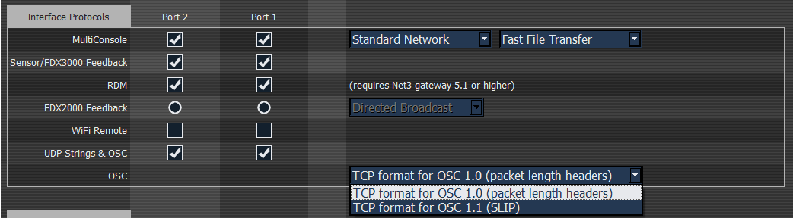

Eos supports sending and receiving OSC through a TCP or UDP connection. The specific type used will depend on the other OSC device or software that you intend to use with Eos. You will need to check that documentation to confirm the connection types supported.
The console can be set to receive and/or transmit OSC messages. This is configured in Setup>System>Show Control>OSC with the {OSC RX} and {OSC TX} touchbuttons.
In addition, you must enable the {UDP Strings & OSC} option for the network interface you wish to use in the ECU>Settings>Network>Interface Protocols.
The preferred method for transmitting and receiving OSC packets is over a TCP connection. Eos will listen for incoming TCP connections on Port 3032. TCP communication still requires that {OSC RX} and {OSC TX} is enabled in the Show Control section of Setup.
In the ECU>Settings>Network>Interface Protocols, there is an option for changing the OSC TCP mode. By default, OSC 1.0 is selected. There are two TCP modes available – OSC 1.0 (packet-length headers) and OSC 1.1 (SLIP). Check the documentation for the OSC device you wish to use over a TCP connection to see which mode it supports.

UDP connections can be used but are not preferred, as messages may be dropped or delivered out of order. When using UDP, the appropriate IP address and ports must be configured in the Show Control section of Setup. For systems without specific networking requirements, ETC recommends UDP port assignments in the range 4703 to 4727 or 8000 and 8001.
The UDP port settings are configured in Setup>System>Show Control. In addition to the OSC TX (Transmit) and RX (Receive) ports, you may wish to set the OSC TX IP address to match the OSC device you are using with your Eos system so that it can receive OSC messages from the console. It is not currently possible to specify multiple IP addresses. If you are using TCP OSC, these settings can be ignored.